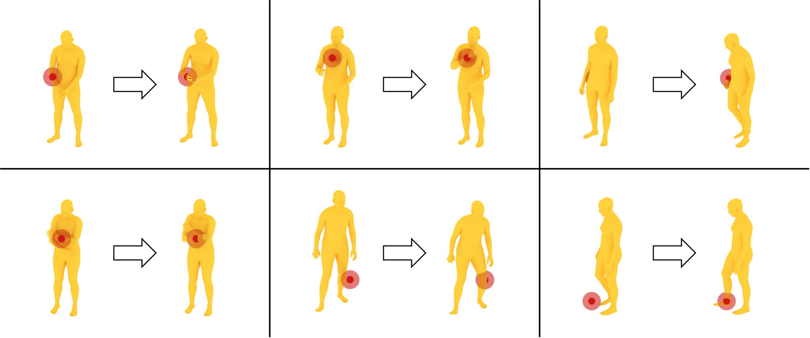

MoSATHuman Motion Generation from Spatial Audio and Textual Description
Text describes what to do and how.
Spatial audio grounds where and when to respond.
Abstract
Human motion is shaped by both the surrounding environment and behavioral intent. Spatial audio provides directional and temporal cues for a response, while language describes the desired action and its style. MoSAT studies human motion generation jointly conditioned on these complementary signals.
We introduce STAM, a dataset pairing human motion with spatial audio and detailed textual descriptions. MoSAT combines a motion variational autoencoder with a latent flow-matching framework, using hierarchical attention to bring natural-language intent and spatial-audio cues into the motion generation process. We also develop tri-modal evaluators to measure alignment between the multimodal conditions and generated motion. Experiments evaluate motion quality, condition alignment, inference-time editing, and an application to simulated humanoid control.
How MoSAT works
From multimodal conditions to full-body motion.

Paired supervision
STAM brings motion, binaural audio, and motion-aligned textual descriptions together.
Joint conditioning
Hierarchical attention combines linguistic intent with acoustic and directional cues.
Motion-space generation
Flow matching generates trajectories in a compact latent space learned by the motion VAE.
Results
Motion generation, editing, and simulated humanoid control.
Motion guided by spatial audio and text
Qualitative comparisons from the paper illustrate motion generated in response to spatial acoustic cues and natural-language descriptions.

Control selected joints at inference time
Joint-level constraints specify target positions at selected frames. MoSAT adjusts the generated motion to satisfy these constraints while preserving smooth movement.

From human motion to humanoid simulation
Generated human motions are retargeted to a Unitree G1 humanoid and tracked in simulation, demonstrating an application of sound- and language-guided motion generation.

Citation
If you find this work useful, please consider citing our paper.
@misc{xu2026mosat,
title={MoSAT: Human Motion Generation from Spatial Audio and Textual Description},
author={Shuyang Xu and Zhiyang Dou and Yiduo Hao and Zekun Li and Liang Pan
and Jingbo Wang and Cheng Lin and Yuan Liu and Wenping Wang
and Mingmin Zhao and Taku Komura},
year={2026},
eprint={2609.23797},
archivePrefix={arXiv},
primaryClass={cs.GR},
url={https://arxiv.org/abs/2609.23797}
}